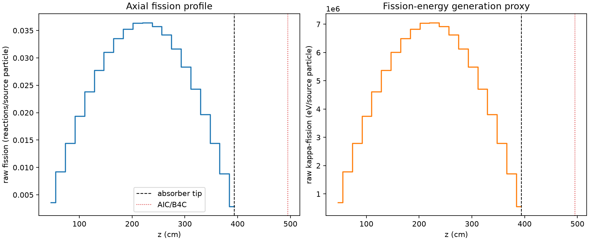
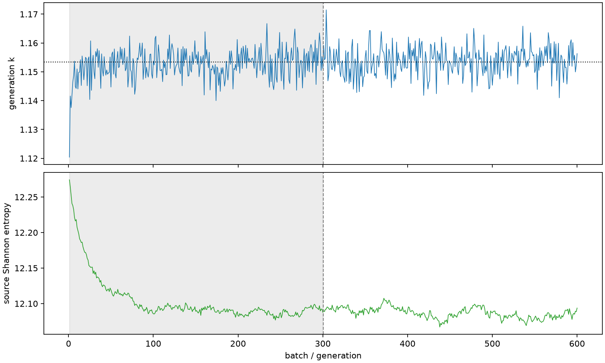

| field | value |
|---|---|
| experiment | V2-STAGE_256_OGRENCI_01-0006 |
| k | 1.153430914623553 |
| MC standard error | 0.0001881292827659436 |
| seconds | 1038.179534245981 |
| acceptance | not_assessed |
| convergence | review_required |
Completed is output integrity only; physical and statistical review required. Zero tallies do not prove zero production or zero uncertainty.
| diagnostic | value |
|---|---|
| geometric fuel voxels | 5280 |
| zero fission tally voxels | 0 |
| low signal fuel voxels | 0 |
| low signal fission share | 0.0 |
| low signal kappa share | 0.0 |
| important fission share | 0.9500232032760051 |
| previous filter included | 5280 |
| duration estimate s | 1562.5173488400023 |
| actual minus estimate s | -524.3378145940214 |
| fission relative MC error | statistics |
|---|---|
| all_geometric_fuel | {"voxels": 5280, "positive_mean_voxels": 5280, "zero_mean_voxels": 0, "undefined_relative_error_voxels": 0, "median": 0.010029218812061813, "p95": 0.027828370426356802, "maximum": 0.0350185762575067} |
| low_signal | {"voxels": 0, "positive_mean_voxels": 0, "zero_mean_voxels": 0, "undefined_relative_error_voxels": 0, "median": null, "p95": null, "maximum": null} |
| important_95pct | {"voxels": 4252, "positive_mean_voxels": 4252, "zero_mean_voxels": 0, "undefined_relative_error_voxels": 0, "median": 0.009411318916115168, "p95": 0.013775107915498215, "maximum": 0.017402519371809325} |
| outside_previous_filter | {"voxels": 0, "positive_mean_voxels": 0, "zero_mean_voxels": 0, "undefined_relative_error_voxels": 0, "median": null, "p95": null, "maximum": null} |
| kappa_fission relative MC error | statistics |
|---|---|
| all_geometric_fuel | {"voxels": 5280, "positive_mean_voxels": 5280, "zero_mean_voxels": 0, "undefined_relative_error_voxels": 0, "median": 0.010017562502929199, "p95": 0.027787597982737344, "maximum": 0.03497660385267082} |
| low_signal | {"voxels": 0, "positive_mean_voxels": 0, "zero_mean_voxels": 0, "undefined_relative_error_voxels": 0, "median": null, "p95": null, "maximum": null} |
| important_95pct | {"voxels": 4252, "positive_mean_voxels": 4252, "zero_mean_voxels": 0, "undefined_relative_error_voxels": 0, "median": 0.009401721903952668, "p95": 0.013759101925051469, "maximum": 0.017382575745986405} |
| outside_previous_filter | {"voxels": 0, "positive_mean_voxels": 0, "zero_mean_voxels": 0, "undefined_relative_error_voxels": 0, "median": null, "p95": null, "maximum": null} |
| axial bin | fission share | kappa-fission share |
|---|---|---|
| 1 | 0.0076715726565104725 | 0.007672028480485083 |
| 2 | 0.019539749776617724 | 0.019539627263648687 |
| 3 | 0.030572515259027735 | 0.03057250848418947 |
| 4 | 0.041164833459538745 | 0.041164789760286036 |
| 5 | 0.05058952472128694 | 0.05058937739182678 |
| 6 | 0.05892183994819902 | 0.058921739912815296 |
| 7 | 0.06594894862457552 | 0.06594874179076386 |
| 8 | 0.07128716080952266 | 0.07128725127767224 |
| 9 | 0.0748599544618818 | 0.07486003267203023 |
| 10 | 0.07717359734405768 | 0.07717328393631015 |
| 11 | 0.07728096727830516 | 0.0772809308440383 |
| 12 | 0.07589853508032723 | 0.07589848102784828 |
| 13 | 0.07263489207225689 | 0.07263460382875507 |
| 14 | 0.06725320309231003 | 0.06725308298193597 |
| 15 | 0.060163167600066236 | 0.060163154669630126 |
| 16 | 0.05164462504477296 | 0.05164466935489078 |
| 17 | 0.041778493796420714 | 0.04177845303383308 |
| 18 | 0.030680780003772026 | 0.030680878661207868 |
| 19 | 0.018833344745628512 | 0.018833277323232454 |
| 20 | 0.00610229422492187 | 0.006103087304600049 |
Histories include the inactive-to-active transition at batch 300. kappa-fission approximates fission energy production, not total heat deposition.

